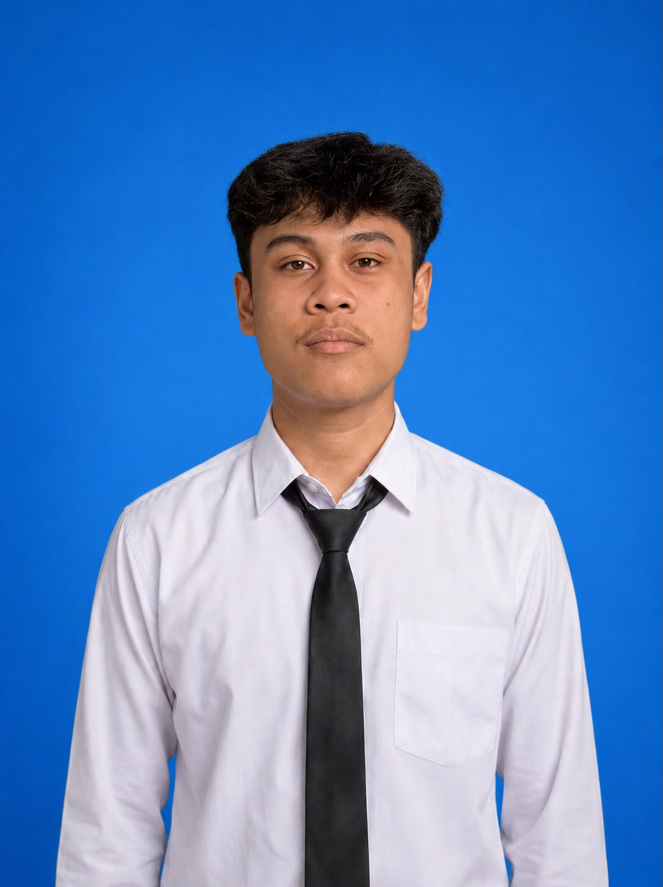
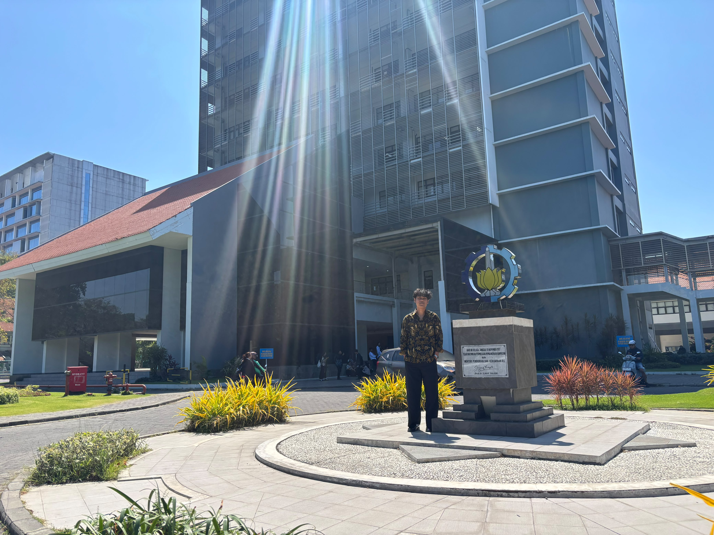

I P. G. Divy Sahasrasya (Rasya)
Mahasiswa S1 Inovasi Digital & Sistem Informasi
Mahasiswa sarjana yang mengeksplorasi inovasi produk digital, riset pengguna, kewirausahaan berbasis teknologi, dan manajemen operasional. Memiliki antusiasme tinggi pada prototyping cepat, teknologi otomotif, modifikasi motor, dan kepemimpinan komunitas.

Rasya
I P. G. Divy Sahasrasya
Fokus & Minat
Desain Produk, Otomotif & Startup
Mengeksplorasi ide-ide baru, menyelesaikan permasalahan industri, dan merancang produk bernilai tinggi.
Desain Produk & Rapid Prototyping
Discovery, riset pengguna, wireframing, dan desain interaksi UX. Menjembatani kebutuhan pengguna dengan validasi solusi yang aplikatif.
Ekosistem Startup & Strategi GTM
Manajemen produk, strategi peluncuran pasar (go-to-market), dan pemodelan operasional agar inovasi dapat tumbuh secara terukur.
Teknologi Otomotif & Modifikasi Motor
HobiMemiliki ketertarikan mendalam pada modifikasi motor dan teknologi otomotif. Fokus pada estetika visual, presisi mekanikal, dan inovasi mobilitas harian.

Riwayat Akademik
Pendidikan & Bahasa
Institut Teknologi Sepuluh Nopember (ITS)
Surabaya, Indonesia
S1. Inovasi Digital, Departemen Sistem Informasi
Fokus pada inovasi digital, manajemen produk, eksplorasi teknologi, riset pengguna, dan strategi go-to-market.
SMAN 1 Semarapura (EKASMA)
Bali, Indonesia
SMA — Kurikulum Merdeka (IPA Informatika)
Fondasi dalam bidang informatika, matematika tingkat lanjut, sains alamiah, dan logika komputasi.
Kemampuan Bahasa
Kepemimpinan & Pengalaman
Pengalaman Organisasi & Kepanitiaan
Rekam jejak manajemen logistik acara, ketertiban operasional, dan kepemimpinan lapangan.
Logistik & Operasional Acara
Organisasi Pemuda Banjar (STT) · Semarapura, Bali
Mengoordinasikan perlengkapan operasional dan logistik untuk kelancaran kegiatan perayaan warga dan adat setempat.
Divisi Keamanan & Crowd Control
OWL FEST V (SWARA) · Semarapura, Bali
Mengatur alur masuk-keluar pengunjung, pengisi acara, dan pengawasan 900+ siswa agar festival berlangsung tertib dan aman.
Pengarah Operasional & Korlap
CEKETER (Komunitas Angkatan) · Bali
Koordinator lapangan saat kegiatan angkatan dan pengelolaan dokumentasi media kreatif bersama tim.
Keahlian & Toolkit
Perangkat Lunak, Teknologi & Kemampuan
Fondasi pengembangan web, software pengeditan video, riset produk, dan minat otomotif.
Pengembangan Frontend
Pengeditan Video & Kreatif
Keahlian Produk & Startup
Hobi & Minat Personal
Mari Terhubung
Informasi Kontak & Media Sosial
Jangan ragu untuk menyapa, berdiskusi mengenai proyek, atau berjejaring melalui media sosial di bawah ini.
Tempat paling pas untuk berinteraksi, melihat cerita harian, dan mengobrol santai.
Terhubung untuk diskusi seputar teknologi, inovasi produk, dan jaringan kerja profesional.
Alamat Email
Kirimkan pertanyaan, tawaran kerja sama, atau pesan langsung kapan saja.